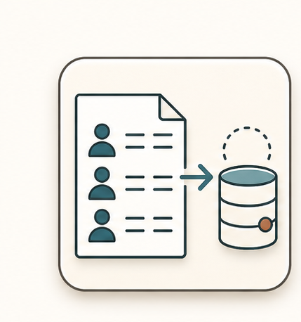

Census Loading
Bring the plan population into EDS cleanly.

Multi-branch visual route

Decisions that change the route
Is this a limited access or cash conversion plan?
Are elections being defaulted during the census load?
Are extra participants present on balance files but absent from census?
Do warning reports indicate fixable data issues or true rejects?
Inputs -> action -> output
Completed PRD or onboarding package
Testing results from AWD
Plan-specific base file
Limited access file when open period applies
Confirm the source of census data: base file, limited access file, client file, or vendor file.
Use AWD testing results to tailor the base and payroll templates for the plan.
Meet with the client contact and walk through exactly how the file should be filled out.
Validate returned data for mandatory fields, data types, term reason code needs, and column placement.
Loaded participant census
Warning and error report notes
Client follow-up list
Verified population count